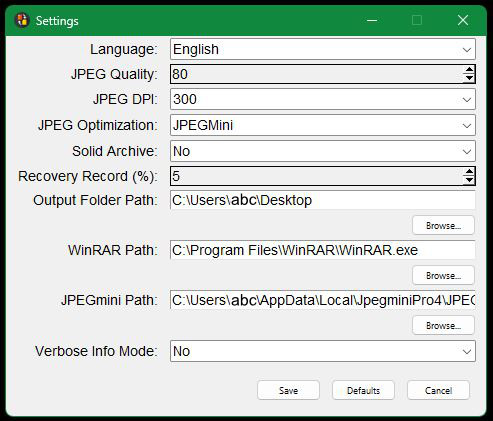

Settings Window

CBX Tools is a utility program designed to assist in converting and
optimizing common comic book file formats, including CBR, CBZ, and PDF. CBX Tools aims to preserve
image resolution and DPI settings as much as possible, ensuring virtually lossless conversion and
optimization for high-quality results.
- Language: Select the interface language (English or Turkish). The language
setting is applied immediately after saving the dialog.
- JPEG Quality: Set the quality of JPEG images (10–100). This setting is used
during PDF-to-CBR conversion for JPEG images or formats like PBM, PGM, and PPM that require
conversion to JPEGs. Values above 80 significantly increase file size without visible quality
improvement. For optimal quality and smaller file sizes, a value between 70 and 80 is
recommended. Default is 80.
- JPEG DPI: Specify the resolution for JPEG images in DPI (150, 300, 400, 600).
This is applied during PDF-to-CBR conversion for JPEG images or formats like PBM, PGM, and PPM
that require conversion to JPEGs. Values of 400 and above significantly increase file size. For
a balance of quality and file size, 300 DPI is recommended. The default value is 300.
- JPEG Optimization: Select the tool for optimizing (reducing file sizes without
compromising resolution or DPI) JPEG images.
Disabled: Leaves JPEG files unchanged.
jpegoptim.exe: A
free
tool included in CBX Tools,
providing lossless optimization via Huffman table adjustments.
JPEGmini
Pro: A
paid tool that
reduces file size without sacrificing quality, offering better and faster results than
jpegoptim. This tool must be installed and set up as per the Getting Started section.
Manual:
Pauses the process, prompting the user to optimize files manually. Click 'OK' to continue after
completion.
- Solid Archive: Enable or disable solid archiving in RAR compression. Default
is No (Disable).
A solid archive is a type of compression where multiple files are treated as a single continuous
block during the compression process. This method can provide better compression ratios,
especially for collections of similar files, as it allows for more efficient storage of shared
data between files.
Using a solid archive may help reduce the file size of large comic book files, resulting in
smaller overall sizes. However, the effect might be negligible for comic files under 150 pages.
Additionally, enabling solid archiving can reduce file recoverability compared to regular
compression with the same percentage of recovery record. In case of file corruption, recovery
might be more challenging with solid archives..
- Recovery Record (%): Specify the percentage of recovery data for RAR archives.
(3%-10%).
A recovery record is a data set added to an archive to help recover the archive in case of
corruption. When a RAR archive is created with a recovery record, a portion of the archive is
dedicated to storing error correction information. This allows the user to repair the archive if
part of it becomes damaged or unreadable.
The percentage (3%-10%) determines how much of the archive's total size is allocated for
recovery purposes. A higher percentage increases the chances of successfully recovering data
from a corrupted archive but also increases the file size.
The default value is 5%, offering
a
balance between compression and recoverability.
- Output Folder Path: Specify the path where the OUTPUT folder, where the final
files will be saved, is created.
The output folder is where the processed or modified files will be stored once the operation
(like compression or optimization) is completed. CBX Tools ensures that the original source
files remain unchanged and intact in their original location. Only the new or modified versions
of the files are placed in the specified output folder. This keeps the source files safe while
allowing you to work with the new results separately.
For example, if the Output Folder Path is set to C:\users\abc\Desktop, the processed files will
be placed under C:\users\abc\Desktop\OUTPUT. If the OUTPUT folder does not exist, it will be
created automatically. If the OUTPUT folder already exists and contains files, the existing
folder will be renamed, and a new C:\users\abc\Desktop\OUTPUT folder will be created to store
the processed files. This ensures that the final files are always placed in a fresh, dedicated
folder without overwriting existing files.
- WinRAR Path: Specify the path of the WinRAR executable. Default is C:\Program
Files\WinRAR\
- JPEGmini Path: Specify the path of the JPEGmini application. This is required
if JPEGmini is selected in the JPEG Optimization box.
- Verbose Info Mode: Enable or disable detailed output (Yes/No).